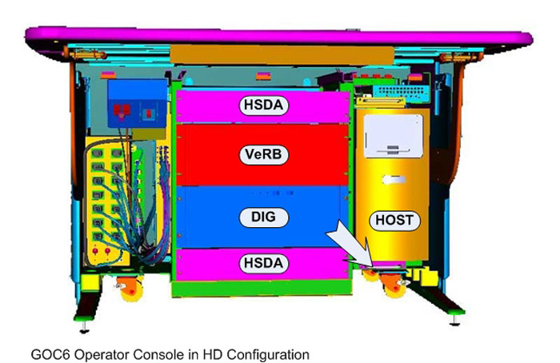

NOTE:
All of the above mentioned components are removed from the front of the console. Access to the rear of the console is only necessary to disconnect cabling from these components.
Illustration 6:
Console Removal Direction
